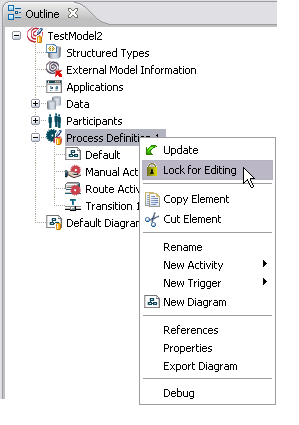
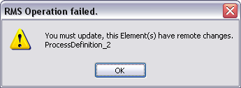
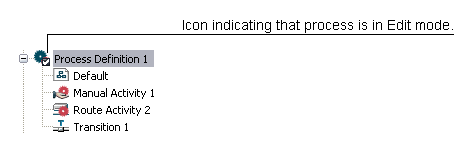
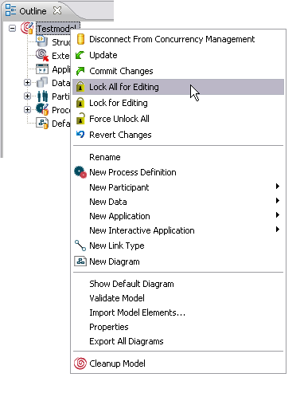
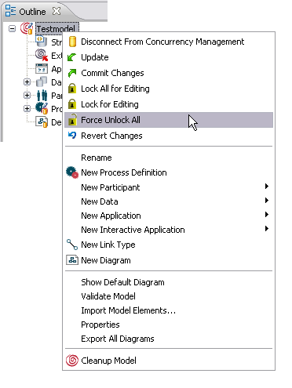
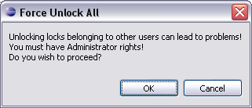
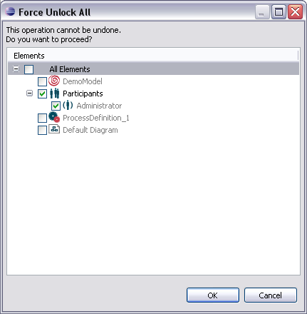
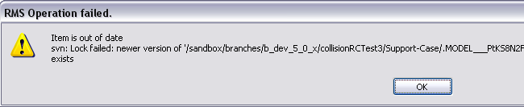

In the Concurrency Management Mode specific model elements can be locked for editing. Obtaining a lock enables the lock owner to perform changes on a model element and write these changes back.
The following elements of a process model can be locked separately:
Before an element can be locked, it will be checked, if remote changes exist. In that case, the element has to be updated first. Please refer to the chapter Updating Model and Model Elements for detailed information on updating elements. Newly created model elements have no locks per default. According lock files are created during a commit.
All nodes in the model Outline view representing lockable elements as listed in the section Separately Lockable Model Elements, provide the Lock for Editing option in their context-menu. This option is enabled if the model element is not already locked. To lock an element, right-click the according node in the Outline view and select Lock for Editing.

Figure: Lock Element for Editing.
In cases changes have been performed on this model element and committed meanwhile by another user, a warning dialog opens, indicating that an update is necessary first:

Figure: Warning Dialog for updating first.
If a model element is locked for editing, this is indicated via an overlay icon presenting a checkmark, in the right lower corner of the element icon in the Outline view.

Figure: Icon to indicate Edit Mode for a Process Definition.
Please note that locking the model itself will not lock all lockable model elements implicitly. Please refer to the section Locking all Lockable Elements in case you want to lock all lockable elements in a model.
Locking a model itself will not lock all lockable model elements implicitly. It only locks model specific properties. In case you like to lock all lockable elements in a model, right-click the model in the Outline view and choose the option Lock All For Editing.

Figure: Lock All for Editing Option.
Note
Model upgrades require a lock on all model elements. For model upgrade, the lock
on all model elements is obtained implicitly.
Note
In case of the referenced model elements,
external model information (like File Connection) and External Model References can be added,
removed and modified only if the Model Node is locked.
The following actions require all model elements to be locked:
Locks are implicitly released if changes on a model element are committed and the option Keep Locks is disabled in the commit dialog. Please refer to the section The Commit Dialog of the chapter Committing Changes for information on this option.
Locked elements can be unlocked explicitly without committing, in case you like to revert your local changes. In this case right-click the according node in the Outline view and select Revert Changes. Please refer to the chapter Reverting Changes for detailed information.
In case a foreign lock is not released by a user, it can be explicitly released by a user, who has the permission to force unlocks. By default, all users have the permission to force unlocks. To change this behavior, administrators have the option to prohibit the permission for specific users. Please refer to section Prohibiting Force Unlock for Specific Users for details.
Having the permission, you can force unlocking existing foreign locks to other users by selecting Force Unlock All in the model context-menu in the Outline view:

Figure: Force Unlock All
The following dialog opens before the unlock is performed to confirm the unlock and give you information about the option:

Figure: Force Unlock Warning
After selecting OK, another dialog opens where you can explicitly select the model elements, where an unlock on all foreign locks should be performed on:

Figure: Force Unlock Dialog
In case a force unlock operation is tried from a user not having the permission to, an according error message opens.
By default, all users have the permission to perform an unlock all. Administrators have the possibility to prohibit force unlock for specific users by creating SVN hooks. Thus it can be decided when lock creation and lock releases are allowed to happen. This can be performed via SVN repository hooks. In case you are an administrator and like to use this functionality, please refer to the Implementing Repository Hooks section of the SVN documentation for detailed information on creating hooks.
The pre-lock and pre-unlock hooks allow administrators to decide when lock creation and lock releases are allowed to happen. Depending on whether or not a lock already exists, these two hooks can decide whether or not to allow a certain user to break or steal a lock. The post-lock and post-unlock hooks are also available, and can be used to send email after locking actions.
When trying to lock an element, it might happen that you get an exception indicating that the item is out of date, as in the following screenshot:

Figure: Lock Failed Message
The lock file might be out of date, if another user just released a lock on this element and the refresh job is not running during your locking process. As a workaround, you can either:
However, after the lock folder is refreshed, locking is working without problems again.